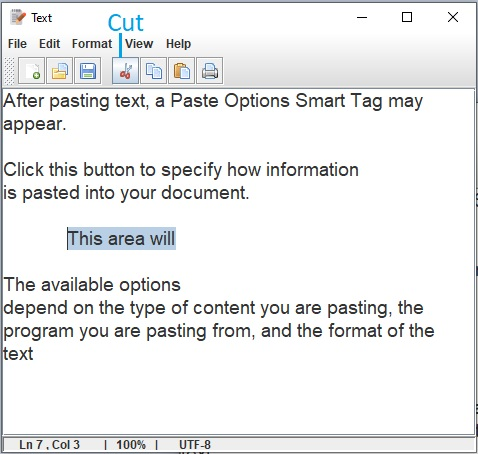
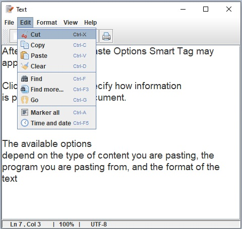
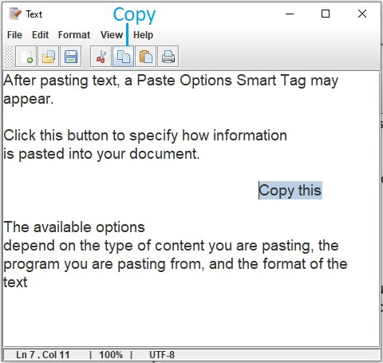
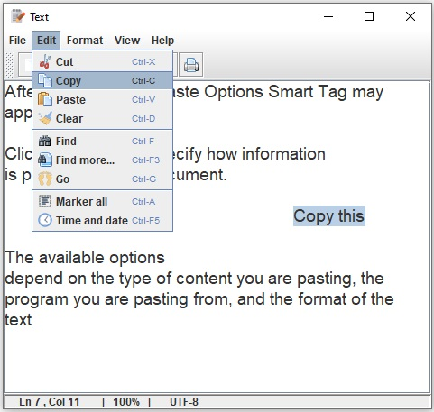
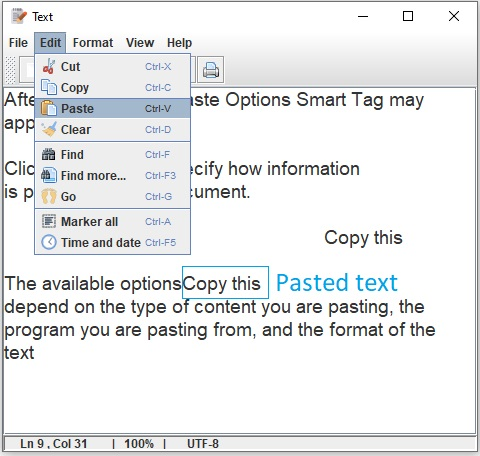

Cutting
When you cut text, it is removed from its original location
and placed in a temporary storage area.
- Select the text area that you want to cut.
- Click the Cut on the Toolbar (Figure_12) or click Edit and click the Cut(Figure_13)
or use keystroke shortcut Ctrl + X .
The text is removed from the document and added to
the temp storage.

Figure_12

Figure_13
Copying
When you copy text, the selected text remains in its
original location and is also added to the temporary storage.
- Select the text area that you want to copy.
- Click the Copy on the Toolbar (Figure_14) or click Edit and click the Copy(Figure_15)
or use keystroke shortcut Ctrl + C .
The text is copied.

Figure_14

Figure_15
Pasting
After cutting or copying, move the insertion point to a
new location in a document and paste.
- Click where you want to paste the cut or copied text.
- Click the Paste on the Toolbar or click Edit and click the Paste(Figure_16)
or use keystroke shortcut Ctrl + V .
The text is pasted.

Figure_16